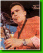

|
-==
ЧЛЕНОВЕ
-- КРАТКА ИСТОРИЯ
-- ИНТЕРВЮТА ==-
|
Евгени
Димитров-Маестрото - клавишни
Евгени Димитров, или всеизвестният
Маестрото, е художественият ръководител
на Ку-Ку Бенд. Роден е на 20 януари 1959г. и е випусник на музикалната
гимназия в Плевен и Държавната музикална
академия, със специалност класическо пиано. В личен план е
разведен, но си има приятелка Радослава,
и има осемгодишен син - Венелин. Според
себе си е шеф по отговорност, не по йерархия. Смята,
че личните връзки в екипа само пречат на работата и смята подобни проявления като
непристойни. Все пак вижда себе си и колегите си като примери за подражание. Харесва
всякакъв тип музика - класика, джаз, рок, фолк, но любими са му филмовата и етномузиката.
Не смята за срамно това, че пеят по частни партита, но отказва да разкрие тарифата
за наемане на Ку-Ку Бенд. Мечтата му е да напише музика към филм, който обаче обезателно трябва да е
български. До момента е участвал в създаването на над 30 албума.Обича да се грижи за външния си
вид, но не обича да споделя факти от личния си живот. Много амбициозен и
изцяло отдаден на професията си.
|
|
Георги
Милчев-Годжи - бас китара
Георги Милчев-Годжи е може би вторият по популярност в
екипа на "Шоуто на Слави Трифонов" след самия титуляр. Всички знаят, че Годжи много обича шефа, но не си спестява злобни коментари
и забележки по негов адрес. Иначе Годжи е роден на 24 октомври 1969г. Разведен е, с двама сина -
Цветомил и Волен. Заклет фен-левскар е (още един повод за драки с шефа), но има и артистични
хобита - като киното и изобразителното изкуство. Преди да се присъедини към бенда е бил
търговец на железария, после е рисувал и продавал картини, а последното му занимание е било
изработката на рекламни и аудиостопове в радио "Астра", Плевен. В бенда идва по покана на
Маестрото, с когото и Слави са приятели още от музикалното училище в Плевен. Единственият
музикант от Ку-Ку Бенд до момента с издадени два самостоятелни албума. По негови думи, публиката
да се стяга за трети. По думите на Слави, той е единствения без висше музикално образование
в бенда, но за сметка на това е много талантлив. Без него атмосферата на "Шоуто на Слави
Трифонов" може би нямаше да е толкова чаровна.
|
|
Цветан
Недялков - китара
Цветан Недялков е виртуоза на китарата в Ку-Ку Бенд.
Роден е в София, под знака на Овена. Според една реплика на Слави в шоуто, живее в квартал 'Банишора'. Семейното му положение е
категорично - женен. Работил е съвместно с
много наши известни изпълнители и се занимава
със звукозаписна дейност. Слави казва за него, че който наш китарист го е чул как опъва
жиците, сериозно се е притеснил за собствените си възможности. Според колегите си от екипа,
той е най-самобитния музикант сред тях. Обича
импровизациите и не пропуска възможност да
поимпровизира - било то в шоуто, или по време на живо изпълнение. Без
него, струнните партии в изпълненията на Ку-Ку Бенд никога
нямаше да бъдат същите.
|
|
Николай
Арабаджиев - китара
Николай Абаджиев е вторият китарист в състава на Ку-Ку
Бенд. След напускането на Герасим, в екипа се появява Цветан Недялков. Шерифа е бил канен да го замества
няколко пъти и така свири в бенда вече четири години. Роден е през 1966г., женен и баща на две деца. От ранна
детска възраст, шест години, започва да свири на пиано. По-късно бива приет в първия випуск
класическа китара в музикалното училище в София. Завършил е естрадния отдел на косерваторията,
защото нямало клас класическа китара. По време на казармата е хорист в ГУСВ, а после още
около пет години свири в ансамбъла на строителни войски. След това следва период, когато
работи в чужбина. Докато не се стига до деня, в който вече става пълноправен член на Ку-Ку
Бенд.
|
|
Илия
Илиев-Илийката - кларинет
Илия Илиев е родом от Горна Оряховица, но е випусник на русенската музикална гимназия.
Музикалната му биография е завидна - завършва консерваторията, после специализира майсторски
клас, минава през период на преподавателска дейност и има 12 години стаж в Симфоничния оркестър на
БНР. Със Слави се запознават като състуденти и колеги в оркестъра. Двамата споделят едно общо
желание - да правят музика, която е специфична. Дълго се борят, докато
създадат свой собствен стил. Критиките към тях са просто
опустошителни, обвиняват ги, че опошлявали музиката. Но
само времето и публиката доказват, че все пак са на прав
път.
|
|
Йордан
Йончев-Гъмзата - тромпет
Йордан Йончев е на 25 години и е зодия Водолей; за
съжаление на всички свои почитателки
си има приятелка. Родом е от Видин и е завършил военно-музикално училище. В бенда се появява
както и Николай Арабаждиев - за да замества. Но този път Илия Илиев, който е бил на турне
в Испания през пролетта на 1997г. Гъмзата свири около 20-ина дни в бенда и след завръщането
на Илийката остава, защото всички го харесали и решили, че той трябва да бъде част от бенда.
Сам признава, че живота му много се е променил от момента, в който е станал член на Ку-Ку
Бенд. Също така загатва, че двата му порока са сладките неща и цигарите. Също така се
радва, че момичетата му обръщат повече внимание, но не се смята за звезда.
|
|  |
Евгени
Йотов - саксофон
Евгени Йотов е саксофониста в Ку-Ку Бенд и единия от
двамата участници в него, които са в състава му още от първия му ден. Роден е в Русе и е завършил русенската музикална гимназия.От ученическите си години се познава с Илийката. В консерваторията, където и започва да свири
на саксофон, се запознава със Слави. Така след известно време на общо познанство се ражда
идеята за бенда. Свирил е с много наши джаз формации и както сам казва, никога не е мислил
за самостоятелна кариера. За него бенда му е целия
живот. Един път развеждан, но отново семеен.
|
|
Венелин
Венков - ударни
Венелин Венков е от Русе и е на 29 години. С Ку-Ку Бенд е
от 6 години. Има и дъщеричка, Паулина, която е почти връстничка на стажа му в бенда. Образованието му е музикално -
русенската музикална гимназия и консерваторията с ударни инструменти. Най-дългокосия сред
музикантите в екипа, но както сам споделя, поддържа косата
си както му падне. Има много добро мнение за феновете на
Ку-Ку Бенд и смята, че неговата популярност и тази на
бенда
съществува благодарение имено на тях. Известен е по
репликата "Венко, не се смей". Може би са най-усмихнатите и вечно смеещи се членове на бенда заедно с Лили Йончева.
|
|
Лилия
Йончева - перкусии
Лили Йончева е най-младият член на бенда във всяко
отношение - и като време на пребиваване
в състава, и като житейски стаж. Тя е с Ку-Ку Бенд от 1999г. и е само на 22 години. Родена
е на 15 март 1979г. и е завършила СМУ "Любомир Пипков", София. В момента е студентка четвърта
година в Софийския университет, специалност музика. Напоследък не й остава много време за
учене, защото шоуто й заема почти цялото време. Чувства се в студиото на предаването като
у дома си и се шегува, че се прибира вкъщи, когато идва на работа. Попада в бенда случайно,
даже като че ли на шега. Решава да се обади на Маестрото,
когато една вечер забелязва, че
Калин Вельов го няма сред бенда. Вземат я веднага и още на същия ден участва в
записите
на песента "Няма "не искам". Казва, че е обожавала
Ку-Ку Бенд, но никога не си се е представяла
сред тях. Сега тя е вече "стопанката" на бенда. Така я нарича за пръв път
Михаил Белчев,
по време на гостуването си в "Шоуто на
Слави Трифонов". А иначе тя е цветето или просто момичето
в групата, когато Слави се обръща към бенда с
думите "момчета и момиче". Радва се,
че живота й се е развил така и си ляга щастлива вечер.
Още
за Лили в списание "Блясък"
|
|
Александра
Раева - беквокали
Александра Раева е родена в София под знака на зодия
Везни на 24 септември 1980 г. Родителите й - Илия Раев и
Наталия Бардская са актьори. Сестра й, която е с 12 години
по-голяма от нея, е завършила НАТФИЗ, но в момента не
работи на театралната сцена. Александра е завършила цели две средни образования - музикално училище с пиано и
оперно пеене и техникум по текстил. В настоящия момент е
студентка трети курс в Художествената
академия, специалност рекламен дизайн. За себе си казва, че слуша
всякаква музика, защото "от всяка можеш да се вдъхновиш,
да научиш нещо". Предпочита да се облича по младежки
елегантно и да сменя често парфюмите си.
|
|
Десислава
Добрева - беквокали
Десислава Добрева е родена на 29 март 1981 г. Роден град й
е Варна. Под знака на Овена се е появила на бял свят
Десислава и сама казва, че много й личи, защото е
"суперинат". Родителите й са инженери, има брат и сестра
също така. Завършила е средно музикално училище с пиано.
Сега е студентка в Консерваторията, едновременно две
специалности - в естрадния отдел с джазово пеене е трети
курс, а в теоритичния - втори. Както Александра, Десислава
обича да слуша различна музика. Облича се така, че да бъде
интересна, но и с крак в модата. По повод на ароматите
казва, че ги сменя често, защото всеки един от тях и напомня
за някакъв период от живота й.
Още
за Деси в списание "За Жената"
|
© 2001
СлавиWeb. Всички права запазени. |